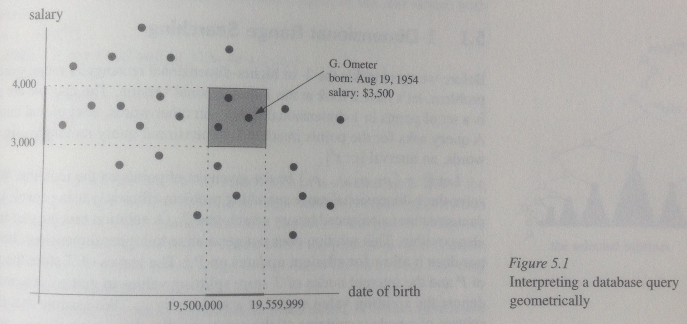

Spatial Data Formats
Shaun Walbridge / @scw
MaptimeBOS — 2015-03-18
Download the repo
https://github.com/scw/maptime-data-formats-2015/
Impacts of Shipping

Job
- Work at Esri on GIS software for scientific applications
- Python and R
- GIS company since 1969, makes things like ArcGIS
I've got plenty of data types, thanks
Many existing data types:
float - int - char - string - timestamp
Can't we just make it with these data types?
Good Ol' CSV, Nothing Beats CSV
Comma Separated Values
name, type, latitude, longitude
BU Bridge, bridge, 42.353, -71.1106
Prudential Tower, skyscraper, 42.347, -71.082
'That place where we measured 108.6" of snow', airport, 42.3605, -71.006638- A simple tabular structure to store data — spreadsheet, without the cruft
- Can upload this data to web mapping sites, or use with something like GDAL to convert it to other formats.
GDAL Interlude
GDAL: translate spatial data between formats.
- OS X:
brew install gdal - Ubuntu/Debian:
apt-get install gdal - Windows: You're SOL try these binaries or OSGeo4W.
Everyone uses it, you should too!
Convert Our CSV
cd data/
# ogr2ogr is confusingly <OUTPUT NAME> <INPUT NAME>
ogr2ogr -f "GeoJSON" locations.geojson locations.csvWorld's tiniest trumpet — doesn't work. Why? GDAL wants to know: Which columns are our spatial data? How are they registered to the surface of the earth?
Convert Our CSV
<OGRVRTDataSource>
<OGRVRTLayer name="locations">
<SrcDataSource>locations.csv</SrcDataSource>
<GeometryType>wkbPoint</GeometryType>
<LayerSRS>WGS84</LayerSRS>
<GeometryField encoding="PointFromColumns" x="longitude" y="latitude"/>
</OGRVRTLayer>
</OGRVRTDataSource>CSV to GeoJSON
Simpler ways:
So what's all this XML? I thought we were just making a point?
- GDAL wants to know where to put the data (shh, projections)
- It also knows how to handle higher order data -- data that doesn't fit as well into our simple column model that works fine for points.
Spatial Data Formats
Want data formats that let us store geometric information. We have an attribute model, like the CSV, but want an additional "entity" model to store the geographic information.
- 0D: Point
- 1D: Line
- 2D: Area
- 3D: Solid
- 4D: Space-time
- With images
{kind=link}
- Can't easily cram these into a tabular structure
- 'Vector' data
Bigger Than Spatial

Simple Features Model
- An OGC specification for representing geometries
Geometries bring their own edge cases:
- WKT Example:
POLYGON((0 0, 10 10, 0 10, 10 0, 0 0))
- WKT Example:
Shapefile
- Open specification, 1996 (Whitepaper, Wikipedia)
- Historically the langua-franca for exchanging vector data
- A collection of sidecar files (
.shp, .shx, .dbf) plus some optional extras (.prj,.sbn, ...) - Stores attribues in a DBF file, entity data in two parts:
.shpcontains the shapes themselves (in binary).shxcontains the index to look up shape locations in the.shp
Shapefile
- Pros:
- fast, ubiquitous, file-based means easy streaming, includes an index (usually quadtree) for fast lookup
- Cons:
- Record offset is a
16-bit int, so only 2GB files - Only one spatial type per file
- The attribute model
- Record offset is a
- Remember: attribute model (our table) + entity data (the shapes)
- Attributes are 'dBase': the cutting edge format of 1988.
- limited column names
- spreadsheet software hates it
Shapefile
# default output of OGR is a shapefile, no `-f format` needed
ogr2ogr locations.shp locations.vrt- Knows about this 'projection' thing
- A variety of other traits that makes it great as a data storage format
- But it's domain specific, so no broader ecosystem
GeoJSON
- A community driven effort to create an agnostic JSON specification which can easily encode geometries (again, our attribute + entity model).
- http://geojson.org
- Spec created in 2008, but really has taken off in the past 3 years -- confluence of awesome.
- Submitted to IETF
JSONhas a massive ecosystem! Spatial is always better when it bootstraps the existing technology ecosystem
GeoJSON
- Our same entity + attribute model, but now with JSON!
{
"type": "FeatureCollection",
"crs": { "type": "name", "properties": { "name": "urn:ogc:def:crs:OGC:1.3:CRS84" } },
"features": [
{ "type": "Feature", "properties": { "name": "BU Bridge", "type": "bridge", "latitude": "42.353", "longitude": "-71.1106" }, "geometry": { "type": "Point", "coordinates": [ -71.1106, 42.353 ] } },
{ "type": "Feature", "properties": { "name": "Prudential Tower", "type": "skyscraper", "latitude": "42.347", "longitude": "-71.082" }, "geometry": { "type": "Point", "coordinates": [ -71.082, 42.347 ] } },
{ "type": "Feature", "properties": { "name": "That place where we measured 109in of snow", "type": "airport", "latitude": "42.3605", "longitude": "-71.006638" }, "geometry": { "type": "Point", "coordinates": [ -71.006638, 42.3605 ] } }
]
}Non-Planar Datasets
- Shapefiles & GeoJSON are non-planar formats, a.k.a. spaghetti:
{kind=link}
- What you want in 98% of cases, but when you don't...
Topological Datasets
- What's a topological dataset?
- GIS.SE answer
- Support in GRASS, PostGIS, ArcGIS (
E00, parcel fabric) and now, with TopoJSON
TopoJSON
- Last Maptime, Andy gave us a great demo of D3 — TopoJSON also created by Mike Bostock (plus our very own Calvin Metcalf)
- I'm hoping Calvin is here to represent
- The Spec
TopoJSON
- Supports transforms and quantization
- Primarily intended as a data visualization format -- throws out data where it doesn't help make a good image at the scale of a D3 canvas.
Files are no fun, what about databases?
PostGIS, GeoPackage (SQLite), SQL Server, Esri Geodatabase, ...
- Everyone can take advantage of spatial data, so its becoming a primative type in most database engines
- Some engines (e.g. PostGIS, GDB) on more of the problem space
Attributes + Entities == Magic!
Neat examples
Data Formats + Computational Geometry:
Koop: Expose Open Data as GeoJSON and Feature Services:
Thanks
- Maptime Boston
- CartoDB for the pizza
- Esri for paying me to nerd out on geospatial
BONUS FORMAT: GeoJakeSON